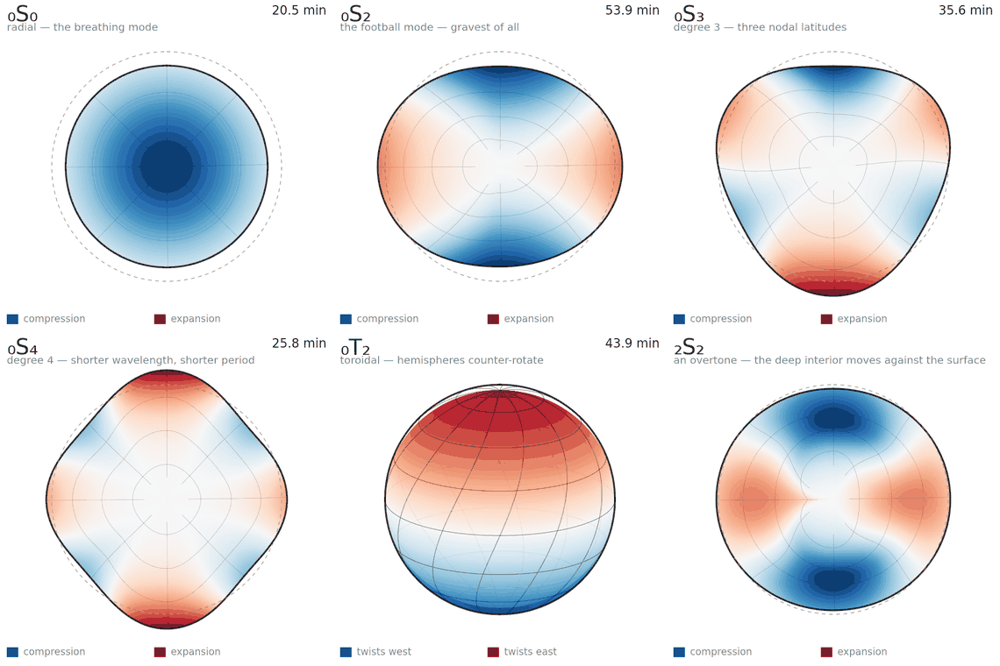
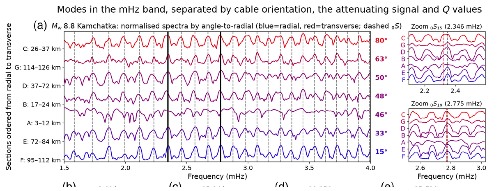

Our paper “Characterizing the Modes of Earth’s Free Oscillations via Submarine Distributed Acoustic Sensing (DAS)”, led by Balthazar Dubois-Dognon with Chu-Fang Yang, is published in The Seismic Record (Vol. 6, Issue 3, 358–367).
Making DAS work where it was thought not to
Distributed Acoustic Sensing is generally considered unusable at very low frequency: below about 10 mHz, the instrumental noise of the interrogator rises steeply as 1/f, and long-period signals disappear into it. An important point of this work is that this is a noise problem, not a sensitivity problem. The fiber is not intrinsically deaf at long periods but the elevated noise floor prevents reaching the sensitivity DAS normally achieves around 0.1 s.
The dominant contribution is the so-called common-mode noise: laser phase noise generated close to the interrogator, which affects all channels simultaneously. Because it is common to the whole cable, it can be estimated from channels where the signal of interest is weakest, and subtracted. With this processing, signals that are formally below the raw noise floor become clearly observable, and the millihertz band, considered out of reach in most DAS applications, becomes usable.
Earth’s normal modes on a seafloor telecom cable
We applied this to one of the most fundamental signals in low-frequency seismology: the free oscillations of the Earth, the discrete normal modes that ring the whole planet after a great earthquake, and whose frequencies and attenuation carry information on deep Earth structure.

A few of the Earth’s normal modes and their periods: the radial breathing mode ₀S₀, the ‘football’ mode ₀S₂, higher-degree spheroidal modes, the toroidal mode ₀T₂ whose hemispheres counter-rotate, and the ₂S₂ overtone. Red is expansion, blue compression.
Using the 160 km telecom cable between Monaco and Italy in the Ligurian Sea, and following the 2025 Mw 8.8 Kamchatka earthquake, we observe spectral peaks consistent with normal modes over the first ~120 km of cable. Their amplitude varies systematically with cable azimuth, in agreement with predictions from a normal-mode summation model. The measured strain rate matches the prediction up to a single multiplicative factor (C ≈ 0.13) that is the same for every event analysed: it’s the signature of a flat, instrument-like transfer loss rather than an unmodelled geophysical effect. That’s good news for future studies: all you need is a large event to evaluate the transfert function of your cable at these frequencies.

Normal-mode spectra recorded along the Monaco–Italy cable after the Mw 8.8 Kamchatka earthquake, ordered by cable orientation from radial (blue) to transverse (red). From Dubois-Dognon et al. (2026), CC BY.
Some further results:
- Normal modes are also detected for smaller earthquakes, down to Mw 7.7 (an Mw 7.9 Kamchatka aftershock and the Mw 7.7 Drake Passage event). Lower magnitudes should be within reach with better characterisation of the common-mode noise.
- Because its azimuth varies along its length, the cable behaves as a two-component horizontal strain meter, separating radial (spheroidal) from transverse (toroidal) motion. Submarine detections of normal modes have so far relied almost exclusively on the vertical component of ocean-bottom seismometers, so resolving the horizontal, and the Coriolis-coupled toroidal modes this way had, to our knowledge, not been demonstrated before.
- Eigenfrequencies and attenuation estimated from the ~6000 channels agree well with PREM (e.g. Q = 249 vs 250 for ₀S₁₉, 226 vs 212 for ₀S₂₄), with a scatter of about 20% comparable to global attenuation studies based on far larger datasets… but here it is obtained from a single event on a single cable.
Why it matters
Beyond the modes themselves, the message is that the low-frequency regime is open to DAS provided the instrumental noise is handled properly. This adds long-period and low-frequency seismology to the list of applications of submarine fiber-optic sensing, alongside tsunami early warning, slow deformation and geodesy, in exactly the regions where conventional seismic instrumentation is costly, sparse, and temporary. It also strengthens the case for DAS deployments in other hard-to-instrument settings, including extraterrestrial ones.
Resources
- Read the full article (DOI) — open access (CC BY)
- Download article PDF
- Data and figure-reproduction code (Zenodo)
Processing was performed with the Xdas Python library. 😉